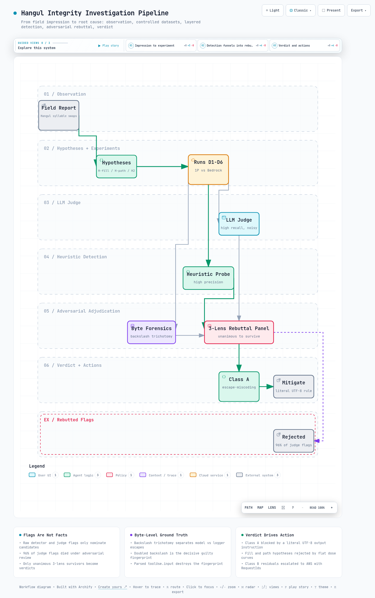

01관찰과 가설
이 절은 조사의 출발점을 다룹니다. 현장에서 무엇이 관찰되었고, 그 관찰을 어떤 가설로 나눠 검증하기로 했는지 설명합니다.
발단은 현장 관찰이었습니다. Claude Code(Bedrock 백엔드)의 TodoWrite, AskUserQuestion 화면에서 "☐ 다았 단계"처럼 한글 음절이 엉뚱한 음절로 바뀌는 증상이 반복 보고되었습니다.
보고자의 체감은 "컨텍스트 점유율 50% 이상부터 빈발한다"였습니다. 컨텍스트 점유율은 모델이 한 번에 기억할 수 있는 입력 공간(컨텍스트 창)이 얼마나 찼는지를 나타내는 비율입니다. 세션이 길수록 잦아 보였기 때문에, 처음에는 긴 입력을 다루는 서빙 쪽 결함(long-context 결함)이 유력해 보였습니다.
다만 체감을 그대로 결론으로 옮기지 않았습니다. 대신 검증 가능한 세 가지 가설로 분해했습니다. 세 가설은 서로 배타적이지 않으며, 각각 독립적인 실험 설계로 판정했습니다.
이 표에서 볼 것은 세 가설이 각각 무엇을 가려내려 했고, 최종적으로 어떤 판정을 받았는지입니다.
| 가설 | 내용 | 가려내려는 것 | 최종 판정 |
|---|---|---|---|
| H-fill | 손상률이 컨텍스트 점유율에 비례한다(50% 이상에서 상승) | 서빙 경로의 long-context 결함 여부 | 기각 |
| H-path | 손상률이 1P(Claude 구독) 대 3P(Bedrock) 경로에 의존한다 | Bedrock 서빙 / 변환 계층 결함 여부 | 유의차 미검출 |
| H2 (escape) | 손상이 raw 툴 JSON 내 \uXXXX 이스케이프 오기에서 기원한다 | 모델 출력 행동 여부 | 확정 (클래스 A) |
여기서 \uXXXX 이스케이프란 한글을 글자 대신 네 자리 코드 번호로 적는 JSON 표기법입니다. 탐지 하니스(cjk_integrity_probe 계열 스크립트)는 H2를 미리 대비한 탐지 클래스를 갖추고 있었습니다. raw 스트림(모델 응답을 가공 없이 그대로 기록한 데이터)에서 한글 이스케이프를 별도로 세도록 만들어 둔 설계가, 이후 근본 원인 확정의 발판이 되었습니다.
02시험 설계
이 절은 실험을 어떻게 짰는지 다룹니다. 어떤 호출 경로를 비교했고, 어떤 데이터셋을 어떤 규모로 돌렸는지 정리합니다.
비교 경로는 5개 셀입니다. 1P는 Claude Enterprise 구독으로 Anthropic에 직접 연결하는 경로(Claude Code CLI)이고, 3P는 Amazon Bedrock을 거치는 경로입니다. Bedrock 쪽은 Claude Code 백엔드 전환, ConverseStream 직접 호출, InvokeModelWithResponseStream 직접 호출, 리전 / 추론 프로파일 변형을 포괄합니다.
ConverseStream과 InvokeModelWithResponseStream은 Bedrock이 제공하는 두 가지 모델 호출 API입니다. 클라이언트 변인은 고정했습니다. 양 백엔드에서 동일한 Claude Code CLI 2.1.220 바이너리와 boto3 1.42.86을 사용했습니다.
이 표에서 볼 것은 데이터셋 6종 각각의 설계 규모와 핵심 결과입니다.
| # | 데이터셋 | 설계 | 핵심 결과 |
|---|---|---|---|
| D1 | Baseline A/B | n=30 x 5셀 x 2시나리오 = 300콜 | 원플래그 25건 → 검증 1건(믄고) |
| D2 | 스모크 | 8콜 (배선과 fill 주입 검증) | 8/8 정상, 1M 창 실동작 확인 |
| D3 | Fill 스윕 1차 | n=20 x 3셀 x fill 4레벨 | 곡선 평탄, F* 부재, 새벅 1건(fill 0) |
| D4 | Fill 스윕 2차 (교정 fill, 심야 KST) | 실측 0 / 30.7 / 51.0 / 71.4% | 평탄 재현, F* 부재, U+FFFD 1건(1P, fill 0) |
| D5 | A/B 재현 (심야 KST) | 300콜 | 검증 1건(사오오) + borderline 1건(반박됨) |
| D6 | Escape A/B (계정 2개) | E(이스케이프 유도) 대 L(리터럴 지시), 계정당 arm별 n=30 | escape 런 45/45 손상 대 리터럴 1/60 |
실행 중 두 가지를 교정했습니다. 첫째, us-east-1의 anthropic.claude-sonnet-5는 on-demand 호출이 불가한 추론 프로파일(여러 리전을 묶어 호출하는 Bedrock 설정) 전용임을 실측으로 확인했습니다. 그래서 해당 셀을 us.anthropic.claude-sonnet-5로 교정했습니다.
둘째, 필러 캘리브레이션(컨텍스트를 채우는 더미 텍스트 양 맞추기)에서 오차가 발견되었습니다. 스크립트는 토큰(모델이 텍스트를 처리하는 최소 단위)당 1.5자를 가정했지만 실측은 약 1.03자였습니다. 이 차이로 1차 스윕의 최고 레벨이 컨텍스트 창을 초과해 무효가 되었고, 2차 스윕에서 fill 레벨을 재교정해 실측 0 / 30.7 / 51.0 / 71.4%를 달성했습니다.
fill 스윕의 분모인 WINDOW 값은 지시서 기본값 200,000토큰이 아니라, Sonnet 5 모델 카드(컨텍스트 1,000,000토큰, 출력 128,000토큰, Bedrock 1M GA)를 근거로 1,000,000토큰으로 교정해 사용했습니다. 또한 Sonnet 5는 temperature / top_p 파라미터를 받지 않으므로, 경로 간 샘플링 동일성이 구조적으로 보장됩니다.
03검증 방법론
이 절은 무엇을 진짜 손상으로 인정할지 정하는 절차를 다룹니다. 탐지기가 올린 후보를 그대로 믿지 않고 세 단계로 걸러낸 이유를 설명합니다.
판정 파이프라인은 3단 구성입니다. 자동 탐지와 LLM judge(다른 LLM에게 출력 검사를 맡기는 방법)가 후보를 넓게 수집합니다. 이어서 적대적 반박 패널이 진성 여부를 판정하고, 바이트 포렌식이 기원(모델 대 파이프라인)을 판별합니다.
어느 한 단계의 출력도 단독으로는 사실로 승격되지 않습니다.
3.1 자동 탐지와 LLM judge
자동 탐지 하니스는 4개 클래스를 검사합니다. U+FFFD(깨진 문자를 대신 표시하는 유니코드 대체 문자 �), KS X 1001 외 희귀 음절(euc-kr 인코딩 길이를 이용한 판별), raw 툴 JSON 내 한글 \uXXXX 이스케이프, 외국 문자 혼입입니다.
이 하니스는 고정밀이지만 재현율이 낮습니다. 흔한 음절 사이의 치환(로그인 → 로까잉류)은 놓칩니다. 이 갭을 LLM judge(claude-haiku-4-5, 1P 경로)로 보강했습니다.
다만 judge가 처음 올린 플래그(원플래그)의 96%가 오탐으로 판명되었습니다(5절). 그래서 원플래그는 후보 수집 용도로만 사용했습니다.
3.2 적대적 3-lens 반박 패널
플래그된 런마다 세 개의 lens(검토 관점)가 붙습니다. 언어학(오탐 클래스 대조), 인코딩 / 파이프라인(바이트 분석, 실증 테스트 포함), 재현 클래스 / 통계입니다. 각 lens는 독립 에이전트가 맡아 "이것은 손상이 아니다"라는 반박을 시도합니다.
세 lens의 반박을 모두 견디고 만장일치로 생존한 플래그만 진성으로 판정했습니다. 실제로 일본어 혼입 1건(手戻り)은 이 패널에서 3/3으로 반박되었습니다. 문맥에 맞는 자연스러운 언어 전환(정합적 코드스위칭)으로 분류된 것입니다.
3.3 바이트 포렌식 - 백슬래시 삼분법
손상이 모델의 이스케이프 표기에서 왔는지는 어떻게 알 수 있을까요? 검증 지점의 raw 기록에 남은 백슬래시 겹 수로 판별합니다. JSON으로 저장된 raw 파일 기준으로 세 가지 경우가 갈립니다.
"잡" # 리터럴 UTF-8 = 모델이 리터럴로 작성
"\uc7a1" # 백슬래시 1겹 = 로거의 ensure_ascii 개입 (모델 무죄)
"\\uc7a1" # 백슬래시 2겹 = 모델이 이스케이프를 직접 작성 (결정적 유죄 지문)Bedrock Invocation Log의 toolUse.input은 파싱된 객체로 저장되어 이스케이프 지문이 소멸합니다. 여기에 리터럴 한글이 보인다고 해서 모델이 리터럴로 작성했다는 증거가 되지 않습니다. 지문이 보존되는 소스는 stream-json 출력의 partial_json(본 조사 하니스가 사용) 또는 프록시 와이어 캡처뿐입니다.
04결과
이 절은 실험이 내놓은 답을 다룹니다. 세 가설의 판정을 차례로 보고, 남은 두 가지 별도 결함까지 살펴봅니다.
4.1 용량-반응 곡선 - H-fill 기각
컨텍스트가 차면 손상이 늘었을까요? 늘지 않았습니다. 실측 점유 0.1~78% 구간을 훑는 fill 스윕을 교정 재현 포함 2회 수행했고, 손상률 곡선은 전 구간 평탄했습니다.
baseline 대비 |z|>1.96이 되는 최초 fill 지점(F*)은 두 번 모두 존재하지 않았습니다. 전체 최대 |z|도 1.01에 그쳤습니다. |z|는 두 비율의 차이가 우연 범위를 벗어났는지 가늠하는 통계 지표로, 통상 1.96을 넘어야 유의하다고 봅니다.
고점유(30~78%) 구간을 병합해도 0/300으로 손상이 없었습니다. 오히려 검증된 손상 이벤트 5건은 전부 fill이 0에 가까운 조건에서 발생했습니다. 손상 런의 입력 크기도 980토큰에서 52,000토큰까지 흩어져 있어, 비율형 임계도 절대형 임계도 성립하지 않았습니다.
점유율 자체는 원인이 아니었습니다. 긴 대화형 세션일수록 모델이 클래스 A의 이스케이프 표기 모드로 진입할 확률이 높아지는 상관으로 체감을 설명할 수 있습니다. 원인 변수(출력 표기 방식)와 상관 변수(세션 길이)가 달랐던 사례입니다.
4.2 경로 A/B - H-path 유의차 미검출
그렇다면 Bedrock 경로가 문제였을까요? 유의한 차이는 찾지 못했습니다. D1의 judge 원플래그는 특정 셀에서 33.3%(z=+2.58)까지 치솟았지만, 적대적 재검 후 전원 오탐으로 소멸했습니다.
검증 기준으로 치환 클래스 합계는 Bedrock 4건 대 1P 0건입니다. 방향은 일관되지만, Fisher exact 검정(표본이 작을 때 쓰는 통계 검정)의 p는 약 0.6입니다. 통계적으로 유의하지 않아 경로 의존성은 결론 불가입니다.
1P 경로에서 별도 클래스(U+FFFD) 1건이 검증된 점까지 고려하면 경로 특이성 주장은 더 약해집니다. Converse 대 Invoke, global 대 us-geo, 스트리밍 여부, tool 대 prose 어느 축에서도 검증 기준 유의 신호는 없었습니다.
4.3 근본 원인 확정 - 클래스 A: escape-miscoding
결정적 단서는 운영 중 발견되었습니다. 모델이 AskUserQuestion 등의 툴 파라미터에서 한글을 \uXXXX 이스케이프로 직접 표기하는 사례가 관찰되었습니다. 그리고 "이스케이프 금지, 리터럴 작성" 메모리 지시 후 증상이 소멸했습니다.
이를 D6 통제 실험으로 확증했습니다. 이스케이프를 유도한 E arm과 리터럴을 지시한 L arm을 두 AWS 계정에서 교차 실행했습니다. 이 표에서 볼 것은 두 arm 사이의 손상률 격차입니다.
| arm | 계정 …6239 | 계정 …5884 |
|---|---|---|
| E (escape 사용 런) | 23/23 손상 (100%, 95% CI 85.7~100) | 22/22 손상 (100%, 95% CI 85.1~100), JSON 파싱 실패 1건 별도 |
| L (리터럴 지시 런) | 1/30 (3.3%, 해당 1건은 클래스 B) | 0/30 (0%) |
| z (E 대 L) | +7.01 | +7.21 |
조건부 분해 결과, 손상을 가른 것은 지시 문구가 아니라 런이 실제로 이스케이프를 사용했는지 여부였습니다. 이스케이프를 6개만 쓴 부분 진입 런에서도 손상(메택, 대시보네)이 나왔습니다.
메커니즘은 단순합니다. 음절당 hex 4자리를 받아쓰는 과정에서 한 자리가 어긋나면, 유효한 인접 음절로 렌더됩니다. 새벽의 "벽"에서 한 자리가 어긋나면 "벅"이 되어 "새벅"이 됩니다.
진입 런에서 손상 밀도는 음절의 3~5%(희귀 음절만 계수한 하한)였습니다. 형태는 고객 증상과 동일했습니다: 백엔드 → 백엔닜 / 백엔향, 모델 → 모데로 / 모데버, 보안 → 버안, 집계 → 집개.
두 계정에서 동일하게 재현되었으므로, 이 현상은 특정 계정이나 서빙 풀의 결함이 아니라 모델의 출력 행동입니다. 리터럴로 작성하면 오기 기회 자체가 사라집니다. 따라서 출력 형식 지시만으로 이 클래스는 차단됩니다.
4.4 클래스 B - 잔존하는 저빈도 토큰 치환
클래스 A를 제거하고 남는 별도 결함이 클래스 B입니다. 검증 4건(믄고, 새벅, 사오오, 쪼르)은 raw delta와 AWS Invocation Log 실측에서 전부 리터럴 UTF-8로 도착했고, 이스케이프는 0건이었습니다.
세 가지 공통점이 있습니다. 단일 부위 치환으로 비단어가 되고, 문맥상 의도어가 명백합니다. 그리고 서브워드 토큰(단어를 더 잘게 쪼갠 조각 단위) 오선택 시그니처(쪽 → 쪼+르)를 보입니다.
얼마나 자주 생길까요? 기저율은 런당 약 0.3~0.4%(음절 기준 약 70,000+개당 1건)입니다. L arm에서 1건이 발생한 데서 보듯 출력 형식 지시로는 차단되지 않습니다.
발생층이 모델 자체인지 서빙 디토크나이즈(토큰을 다시 글자로 되돌리는 단계)인지 가리려면 서버측 텔레메트리가 필요합니다. 그래서 Bedrock RequestId 3건을 포함한 증거 패키지를 AWS에 전달했습니다.
포렌식 전수 검사도 같은 방향을 가리켰습니다. 하니스가 기록한 1,071런의 raw delta 전체에서 모델 작성 이스케이프는 0건이었습니다(프로브가 잡은 손상은 전부 클래스 B). CloudWatch Insights로 주간 26,427개 레코드를 스윕한 결과에서도 텍스트 필드의 \\u 매치는 0건이었습니다.
4.5 1P 경로의 U+FFFD - 별도 디코드 클래스
1P 경로에도 별도 결함이 하나 있었습니다. cc-1p-enterprise 셀의 TodoWrite JSON에서 "레이아�트에"처럼 실제 콘텐츠가 손실된 U+FFFD 이벤트 1건이 검증되었습니다.
패널의 Node 실증이 클라이언트를 배제했습니다. CLI의 청크 분할이 원인이라면 대체 문자가 2~3개 나와야 하지만, 관측은 단일 대체 문자와 온전한 후속 텍스트였습니다. 따라서 상류(서빙 디토크나이즈 또는 모델의 대체 문자 토큰 방출)로 국소화되었습니다.
이 이벤트는 고객 증상과 다른 클래스입니다. 1P 경로에도 자체 결함이 존재함을 보여, 경로 특이성 주장을 추가로 약화시킵니다. 이 표에서 볼 것은 검증된 손상 이벤트 전체의 형태, 클래스, 발생 경로입니다.
| # | 관측 형태 | 클래스 | 경로 | 시나리오 | 일시 (UTC) |
|---|---|---|---|---|---|
| 1 | 믄고 (의도어: 믿고) | B | Claude Code CLI → Bedrock | prose | 07-28 11:11 |
| 2 | 새벅 (의도어: 새벽) | B | Bedrock ConverseStream 직접 호출 | tool JSON | 07-28 12:01 |
| 3 | 사오오 (의도어: 오백) | B | Bedrock ConverseStream 직접 호출 | prose | 07-28 16:15 |
| 4 | 레이아�트에 (U+FFFD) | 디코드 | 1P Enterprise (Claude Code CLI) | tool JSON | 07-28 16:16 |
| 5 | 쪼르 (의도어: 쪽) | B | Bedrock ConverseStream 직접 호출 (D6 L arm) | tool JSON | 07-31 18:13 |
| - | 手戻り 일본어 혼입 | borderline | Bedrock InvokeModel 직접 호출 | tool JSON | 07-28 15:01 (패널 3/3 반박, 손상 아님) |
05방법론적 교훈과 완화
이 절은 이번 조사에서 얻은 검증 방법의 교훈과 실무 완화책을 다룹니다. 같은 문제를 겪는 팀이 바로 적용할 수 있는 내용입니다.
5.1 LLM judge 원플래그는 손상률이 아닙니다
judge의 플래그는 얼마나 믿을 만했을까요? 두 A/B 런의 judge 원플래그 74건 중 71건(96%)이 오탐이었습니다.
대표 오탐은 조사 결합 오판입니다. "서비스 메시나 인그레스"(메시 또는 인그레스)를 비단어 "메시나"로 판정한 사례가 D1 25건 중 21건을 차지했습니다. 언어베일러블(unavailable), 리브니스(liveness) 같은 음역 변이도 오탐원이었습니다.
오탐은 셀 간 균일하지도 않았습니다(출력 문체 빈도 차). 그래서 원플래그 기반 z-검정은 신뢰할 수 없었고, 실제로 D1의 z=+2.58 신호가 재검 후 소멸했습니다.
역방향 갭도 있었습니다. 흔한 음절로 착지한 비단어(쪼르)는 희귀 음절 휴리스틱을 통과하므로 judge 없이는 검출되지 않습니다. 결국 휴리스틱(정밀), judge(재현), 적대적 재검(정확)의 3단 구성이 모두 필요하다는 것이 이 조사의 방법론적 결론입니다.
적대적 재검 없이 LLM judge의 플래그 비율을 손상률로 읽으면, 이 조사에서는 실제보다 최대 25배 부풀려진 수치를 보고하게 됩니다. 셀 간 비교(z-검정)도 오탐 분포가 균일하다는 가정이 깨지므로 함께 무효가 됩니다.
5.2 완화 지시 배포
클래스 A는 출력 형식 지시 한 줄로 차단됩니다. 적용은 3계층을 권고합니다. 개인은 Claude 메모리와 ~/.claude/CLAUDE.md에, 팀은 각 저장소의 CLAUDE.md에, 조직은 Enterprise 관리형 설정으로 강제 배포합니다.
툴 호출 파라미터(JSON)의 한글 등 비ASCII 문자열은 항상 리터럴 UTF-8로 작성하고,
\uXXXX 유니코드 이스케이프로 표기하지 않는다.업스트림 보고도 완료했습니다. 클래스 A는 E arm raw 기록을 재현 증거로 첨부해 Anthropic에 공개 이슈(anthropics/claude-code#83033)로 보고했습니다. 클래스 B는 Bedrock RequestId 3건의 서빙 텔레메트리 상관 분석을 요청하는 증거 패키지로 AWS에 전달했습니다.
5.3 재발 캡처 표준
재발 시 화면 캡처나 세션 파일은 증거 능력이 없습니다. 이스케이프 지문이 보존되는 소스로 캡처한 뒤, 백슬래시 삼분법(3.3절)으로 판별해야 합니다.
claude -p --output-format stream-json --include-partial-messages # partial_json에 지문 보존06한계
이 절은 이번 조사가 확정하지 못한 것을 다룹니다. 결과를 해석할 때 함께 봐야 할 전제들입니다.
- 클래스 B의 발생층(모델 자체 대 서빙 디토크나이즈)은 국소화되지 않았습니다. 관측된 Bedrock 4건 대 1P 0건은 시사적이지만 비유의입니다. 판정에는 RequestId 상관 분석 또는 셀당 수천 런 규모가 필요합니다.
- 통계 검정력이 제한적입니다. 조건당 n=20~30이므로 0/20 관측은 상한 16.1%만 보장합니다. 클래스 B 기저율 추정(0.3~0.4%)의 신뢰구간도 넓습니다.
- Claude Code 셀의 usage 지표는 세션 누적치(요청당의 약 2배)라 요청당 환산이 필요합니다. 조사 호스트의 기본 부하는 요청당 약 52,000토큰이었습니다.
- fill 스윕은 단일 턴에 필러를 주입하는 구조입니다. 실제 장시간 대화형 세션에서 escape 모드 진입이 잦아지는 동학은 직접 측정하지 않았습니다. D6의 조건부 분해로 간접 확증했습니다.
- judge는 자연스러운 오타 / 신조어 경계에서 잔여 불확실성이 있습니다. 모든 진성 판정을 3-lens 패널로 이중화해 완화했습니다.
07결론
이 절은 조사 전체를 정리합니다. 체감이 가리킨 곳과 실제 원인이 어떻게 달랐는지, 이제 무엇을 하면 되는지 요약합니다.
"컨텍스트 50% 이상에서 빈발"이라는 관찰은 long-context 서빙 결함을 시사했습니다. 그러나 통제 실험의 결론은 달랐습니다. 점유율 무관, 경로 유의차 없음, 그리고 모델이 툴 JSON의 한글을 이스케이프로 받아쓰다 hex를 오기하는 출력 행동(클래스 A)이 원인이었습니다.
이 클래스는 리터럴 작성 지시로 차단됩니다. 지시로 차단되지 않는 저빈도 토큰 치환(클래스 B)과 1P 경로의 U+FFFD 디코드 손상은 별도 클래스로 잔존합니다. 한 문장으로 요약하면, 한글 깨짐의 주범은 긴 세션도 Bedrock도 아니라 모델의 이스케이프 받아쓰기였고, 리터럴 작성 지시 한 줄로 막을 수 있습니다.
원칙: 체감 가설은 통제 실험으로 분해하고, 탐지기의 플래그는 적대적 반박을 통과한 뒤에만 사실로 승격합니다.
운영 조치는 세 가지로 정리됩니다. 첫째, 완화 지시 문안을 개인 / 팀 / 조직 3계층에 배포해 클래스 A를 차단합니다. 둘째, 클래스 B는 저빈도 잔존 결함으로 취급해 모니터링을 유지하면서 서버측 상관 분석 결과를 기다립니다.
셋째, 재발 시에는 지문 보존 소스로 캡처합니다. 백슬래시 삼분법으로 기원을 판별한 뒤 해당 채널(Anthropic 또는 AWS)로 보고합니다.

--참고 자료
이 절은 본문 수치와 주장의 출처를 모았습니다. 조사 데이터 원본, 공식 문서, 배경 자료 순서입니다.
핵심 출처
- 내부 종합 보고서 "Claude Sonnet 5 한글 출력 무결성 조사"와 원시 실행 데이터(runs / summary / verification-panel 파일, escalation 증거 패키지) - 로컬 저장소 cconbedrock-test (2026-08-01). 본 문서의 모든 수치가 여기에서 나왔습니다.
- anthropics/claude-code#83033 - 클래스 A(escape-miscoding) 재현 증거를 첨부한 업스트림 보고 이슈, GitHub (2026-08-01) https://github.com/anthropics/claude-code/issues/83033
공식 문서
- Models overview - Anthropic (컨텍스트 창, 출력 한도 등 모델 카드) https://docs.anthropic.com/en/docs/about-claude/models/overview
- Anthropic Claude Messages API - Amazon Bedrock User Guide https://docs.aws.amazon.com/bedrock/latest/userguide/model-parameters-anthropic-claude-messages.html
- ConverseStream - Amazon Bedrock API Reference https://docs.aws.amazon.com/bedrock/latest/APIReference/API_runtime_ConverseStream.html
- InvokeModelWithResponseStream - Amazon Bedrock API Reference https://docs.aws.amazon.com/bedrock/latest/APIReference/API_runtime_InvokeModelWithResponseStream.html
- Model invocation logging - Amazon Bedrock User Guide (Invocation Log 포렌식의 근거 문서) https://docs.aws.amazon.com/bedrock/latest/userguide/model-invocation-logging.html
- Supported cross-region inference profiles - Amazon Bedrock User Guide (us. / global. 추론 프로파일) https://docs.aws.amazon.com/bedrock/latest/userguide/inference-profiles-support.html
외부 자료
- RFC 8259 - The JavaScript Object Notation (JSON) Data Interchange Format - IETF (2017-12), 7절의 \uXXXX 이스케이프 규정 https://www.rfc-editor.org/rfc/rfc8259
- UTF-8, UTF-16, UTF-32 & BOM FAQ - Unicode Consortium (U+FFFD 대체 문자의 의미) https://www.unicode.org/faq/utf_bom.html
- Hangul Syllables (U+AC00~U+D7AF) 코드 차트 - Unicode Consortium (hex 한 자리 오기가 유효 음절로 착지하는 코드 공간) https://www.unicode.org/charts/PDF/UAC00.pdf